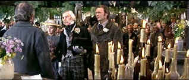

| Paint
Your Wagon/C+,B+ |
| Paramount/1969/164/ANA 2.35 |
Clint Eastwood in a musical? Lee Marvin in a musical? That's about the
whole shootin' match here. It's the all singing, all dancing western musical spectacle set in
No-Name City during the days of the California gold rush. Try as the might, the incredibly
successful musical comedy team of Lerner and Loewe fail to dig up much gold in the film version of
their stage play.
Part of the problem is with the casting. Eastwood acquits himself surprisingly
well as Pardner, crooning a couple of small tunes simply, but Marvin' Ben Rumson is mostly etched
from the memory of his great performance as Kid Shelleen in Cat Ballou. He's funny in
stretches, but the character lacks the insanity of that other great drunk role. And believe, you
won't want to hear him sing! Jean Seberg is an appealing Elizabeth. She doesn't have much to do but
bob and weave between her two men.
 |
| Standing up for and holding up
Rumson. ©Paramount |
Wandering Ben Rumson stumbles onto a seriously injured Pardner and his dead
brother. Lo and behold the gravesite along a bubbling river is sparking with flecks of gold. Ben
stakes the claim for himself and Pardner. Around the gold and prosperity a town rises up, but the
one thing missing are the ladies. A Mormon man shows up with two wives and sets the miners to
salivating over the imbalance of the situation. An impromptu auction rectifies the situation and
Rumson buys the hand of Elizabeth, a strong-minded independent woman. Rumson isn't the prettiest
guy to look at, but Pardner is mighty appealing to Elizabeth. He returns the desire and before you
know it No-Name City is home to a most unusual relationship.
The book structure supports the long running time pretty well. Basically a
three act play, it's finding gold, playing with the gold, and running out of gold. It tries hard
for quaint comedy at every point and only has sputtering success. Most disappointing is the musical
direction. It's rather listless. The production numbers fail to ignite any excitement. The
recording lacks an intimacy with the actor's performances. The songs float in a nether land between
the sky and the character. Rather than point a finger at the DVD transfer, it appears more a
director's choice. The production design is fun, the big catastrophe sequence, quite funny, yet one
can still imagine how it looked on the Broadway stage. Even They Call the Wind Mariah, a
popular hit during the stage run, plays wooden despite Harve Presnell's excellent singing voice.
There are plenty of characters to add to the eccentric behavior of the quaint
mining town. Ray Walston is Mad Jack Duncan, a miner with a penchant for tunneling; Harve Presnell
is gambler Rotten Luck Willie; and Tom Ligon spreads his smile from one end of California to the
other as Horton Fenty, a young innocent introduced to the pleasures of No-Name City by
Rumson.
This is a handsome widescreen DVD. Color depth is excellent with appealing
saturation. Skin tones have nice shading and never appear pasty. Gold dust is defined with resolute
precision. You'll probably be able to catch every bloodshot roll of Lee Marvin's eyes. Blacks are
rich without being crushed and contrast level pack adequate punch into the picture. The Dolby
Digital 5:1 surround is cleanly delivered, though songs, as pointed out earlier, lack character
localization.
|
|
|
|

Selections from the Feature Archive
include articles on Akira Kurosawa, Frank
Darabont, Blonde Bimbos, Hollywood Street Gangs, or Vietnam: The
Hollywood Pariah, and many more....
Puttin on the
Ritz

Fred Astaire and Cyd Charisse bring Silk Stockings to life, a remake of Ninotchka, one of many
films successfully turned into musicals by the Hollywood dream factory. Read all about remakes into
musicals by clicking on the divine dancers.

Take a look at the merry images of America's gift to
the movies: Hollywood Musical Posters are featured from The Movie
Poster Archive.

Annie Get Your Gun/A,A-
Irving Berlin's brilliant musical gem is polished and preserved on this Warner DVD release. An
explosion of music, song, dance and color.

Imaging Science Foundation
The Imaging Science Foundation promotes proper standards in home theater viewing. ISF trained
technicians offer monitor calibration services to consumers. The difference in a properly
calibrated monitor can be astounding. Click on the image to find an ISF member near you.

Terrific resource for learning about the ins and outs of movie
poster collecting.
 Have you visited Home Theater
Talk lately? One of the friendliest places on the Net for Home Theater and DVD discussion, you
can get help for installation problems or simply share your opinions with other Vidiots. Have you visited Home Theater
Talk lately? One of the friendliest places on the Net for Home Theater and DVD discussion, you
can get help for installation problems or simply share your opinions with other Vidiots.

Original articles, DVD reviews, links, forum discussion and more.

Specializing in DVD Collector's Editions, this new site is just
starting to build its review database. Check out reviews of the trio of Kevin Smith specials.
|